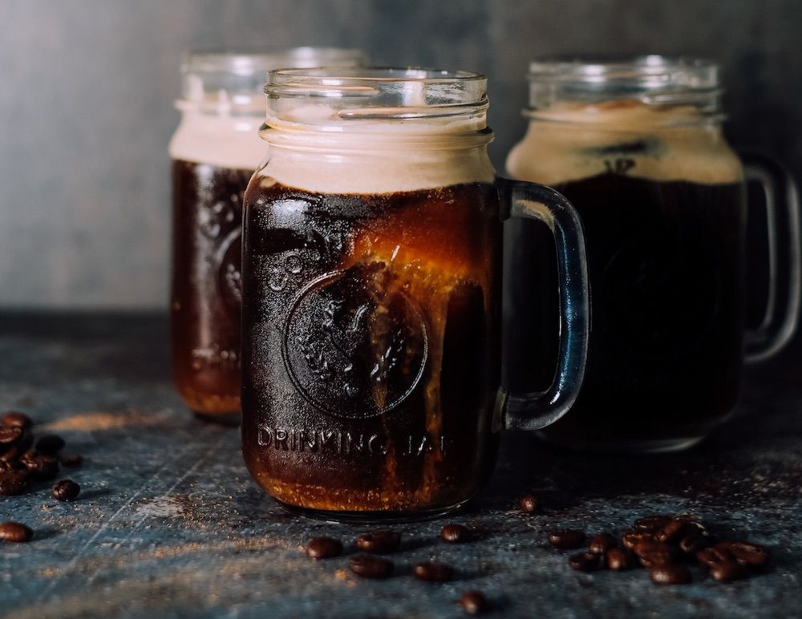
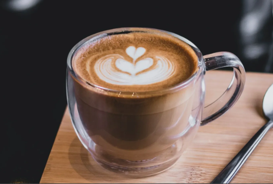

RECETAS DE CAFECITO
¿Queres probar un cafecito distinto? Te dejamos las siguientes recomendaciones
Vainilla Cold Brew

Una bebida refrescante ideal para el verano.
Mocaccino

Para los fanaticos del chocolate
Caramel Macciato

Una alternativa deliciosa con caramelo y vainilla
Café Irlandés

Solo apto para los gustos mas refinados. Café y whisky